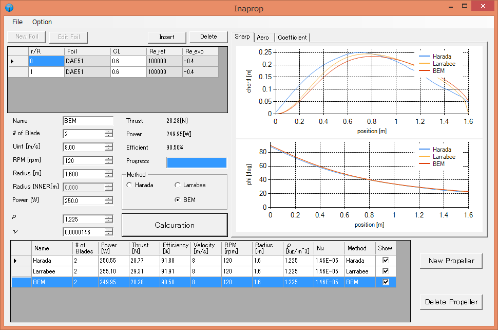

fenrirさんが開発を主導しているオープンソースハードウェア（Creative Commons+New BSD）を商品化したものです。 3軸の加速度センサ、3軸のジャイロセンサ、3軸の地磁気センサ、気圧計、GPS受信機、温度センサを搭載しています。
センサ計測データはMicroSDカードへの書き込みとUSB接続でリアルタイム計測が可能です。 付属のPCソフトを使えばExcelで読み取れる形式（csv形式）に変換することも可能です。
- 誘導損失最小のプロペラの設計(Larrabee, Adkins & Liebeck method)
- 抗力最小のプロペラの設計(vortex methos)
- プロペラ性能解析（未実装）

最新のバージョンは以下からダウンロード出来ます。
現在のバージョンは0.55
Github Page
Download
必要なもの
OS: Windows vista/7/8.1
Microsoft .NET Framework 4
渦法 Vortex method
- Harada,"Design of propeller in low Reynolds number range",JAXA-RR-06-032, 1-13, 2007-03
JAXA Repository
- Chattot,"Optimization of propellers using helicoidal vortex model",Computational Fluid Dynamics Journal,2000
PDF
Larrabee method
- Larrabee, E. E., Practical design of minimum induced loss propellers, SAE Technical Paper 790585, 1979
Scribd.
- Design of Propellers for Motorsoarers
PDF
Adkins & Liebeck method
- Adkins, C. N., Liebeck, R. H., Design of optimum propellers, Journal of Propulsion and Power, vol. 10 (1994), no. 5, pp 676–682.
- TAKASAWA et al,"Wind Tunnel Test of a Propeller Working in a Low Reynolds Number Range"NAL TR-1071, 1990-06, pp.29-
JAXA Repository
etc...
- Betz, A. with Appendix by L. Prandtl, Schraubenpropeller mit Geringstem Energieverlust, Göttinger Nachrichten, Göttingen, 1919, pp 193–217.
- Goldstein, S., On the vortex theory of screw propellers, Proc R Soc London A, 1929, 123, pp. 440–465.
- Wald, Q. R., The aerodynamics of propellers, Progress in Aerospace Sciences 42 (2006), pp 85–128,
ScienceDirect
- Klesa, "Comparison of Methods for Computtion of Ideal Circulation Distribution on the Propeller"
PDF
- my blog(Japanese)
http://www.ina111.org
以下のものはInapropの代わりとして使えるオススメのソフトウェアです。
XROTOR
ダクト付きや自由端のプロペラ、風車の設計解析のための対話的プログラム。推奨。
XROTOR
DCDF
ダクト付きファンの設計解析の対話的プログラム。
DCDF
QPROP/QMIL
モーターとプロペラ、風車と発電機の組み合わせの性能予測プログラム。QMILによってプロペラの設計も可能。
QPROP/QMIL
JBLADE
XFLR5とQBLADEを元にしたプロペラの設計解析ソフト。まだ未完成な部分もある。
JBLADE
PROP_DESIGN
プロペラの設計解析ソフト。使い方がめんどくさい。
XROTOR
ESOTEC DEVELOPMENTS software
DFDCやXROTORを改良して配布している。
Software
Copyright (c) 2013 Inagawa Takahiro Inaprop is Licensed under MIT License.
You may copy, modify and redistribute Inaprop or its modifications freely. The code has been developped exclusively for design propeller in low reinolds number region. All other usages are strongly disapproved. Inaprop is released free, without any guarantee of any kind. Design of all products with the use of the code will be at the user's entire risk Inaprop is by no means a professional product, and does not offer the same gurantees of robustness, reliability, precision or product support than commercial softwares.